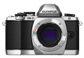

器材库 > APS及其以下画幅可换镜头数码相机 > OM-D E-M10

规格总览
产品类型
M4/3画幅可换镜头数码相机
发布日期
2014-02-28
影像规格
影像传感器
Live MOS
影像传感器尺寸
17.3 x 13.0mm
总像素
1720万
有效像素
1610万
影像处理器
TruePic VII
最大解像度
4608 x 3456
静态图像尺寸
[RAW] 4608 x 3456像素、[JPEG] 4608 x 3456像素 - 640 x 480像素
静态图像格式
JPEG, RAW, RAW+JPEG
画幅比
3:2, 4:3, 16:9
短片尺寸
Full HD: 1920(H)x1080(V), 30p(29.97fps) 记录 24Mbps(Fine) / 16Mbps(Normal)
短片格式
MOV, MPEG4-AVC/H.264
除尘系统
超声波除尘 (传感器除尘系统)
镜头和对焦
镜头卡口
Micro 4/3
对焦系统类型
高速成像AF
对焦点
81区AF
对焦模式
单次AF (S-AF) / 连续AF (C-AF) / 手动对焦 (MF) / S-AF + MF / AF跟踪 (C-AF + TR)
AF辅助灯
有
手动对焦
支持
曝光控制
测光系统
TTL 传感器测光
测光模式
中央重点测光, 点测光, ESP
测光范围
-2EV~20EV
曝光模式
P（程序自动曝光）, 场景选择, B门, A（光圈优先自动曝光）, S（快门速度优先自动曝光）, M（手动测光曝光）, 艺术滤镜, iAUTO
快门类型
电子控制焦平面快门
快门速度
1/4000 - 60 秒(1/3, 1/2或1EV可选)
闪光同步速度
默认设置8分钟(1/2/4/8/15/20/25/30分钟可选)秒
曝光补偿
±5EV以1/3, 1/2, 1EV级调整
自动曝光锁
有
ISO感光度
100, 400, 800, 1600, 可扩展至25600
白平衡
白炽灯, 闪光灯, 色温调节, 阴天, 荧光灯, 自定义, 自动, 白平衡包围, 晴天, 水下, 一键式
自拍
10秒, 2秒
连拍
[连拍H模式] 8.0 fps、[连拍L模式] 3.5 fps
闪光灯
内置闪光灯
弹出式
闪光模式
自动, TTL, 慢速同步, 减轻/消除红眼, 强制闪光, 减轻红眼慢速同步
闪光指数
GN=5.8 (ISO100・m) / GN=8.2 (ISO200・m)
闪光补偿
±3EV以每0.3, 0.5, 1 EV可调EV级调整
外接闪光灯
FL-50R, FL-36R, FL-14, FL-300R, FL-600R
取景器/显示屏
取景器
EVF电子取景器
取景范围
100%
取景放大倍率
1.15倍
屈光度调节范围
约20mm (-1m-1, 从后镜片表面算起) / -4 ~ +2m-1
LCD类型
TFT LCD
LCD尺寸
3.0英寸
LCD像素
103.7万
视野率
100%
LCD特性
触摸屏
亮度调节级数
±7 级
Live View
有
Live View 显示
曝光补偿预览,白平衡调整预览,渐变自动预览,面部检测预览(最多8人),网格线,放大预览(x5/x7/x10/x14),直方图,普通,高光&阴影预览, 水平仪, 关闭
文件输入/输出
存储卡
SD/SDHC, SDXC
数据接口
USB2.0
视频/音频接口
HDMI Mini 输出
电源
电池
BLS-5可充电式锂电池
续航能力
约350 张
机身规格
颜色
黑色
尺寸
119.1 × 82.3 × 45.9mm
重量
350g
其它
工作温度
(操作)0 - 40℃ / (存储) -20 - +60℃
工作湿度
(操作)30 - 90% / (存储)10 - 90%
老襄阳摄影师2014-10-28 13:595 分
操作性 5.00功能性 5.00美观性 5.00趣味性 5.00耐用性 5.00性价比 5.00解像力 5.00色彩还原 5.00
promise3232014-09-07 20:094.75 分
操作性 4.50功能性 5.00美观性 5.00趣味性 5.00耐用性 5.00性价比 4.50解像力 4.50色彩还原 4.50
promise3232014-09-03 00:04
产品图 / 样片
评测 / 相关文章
- 详细内容 （存档）
- 复古小精灵 奥林巴斯OM-D E-M10详细评测 （存档）
- ［试用］用M4/3拍花 （存档）
- ［资讯］战力提升 奥林巴斯发布E-M1/E-M10新固件 （存档）
- ［试用］奥林巴斯OM-D E-M10评测样张 （存档）
- ［试用］奥林巴斯E-M10开箱图赏 （存档）
- ［资讯］DxOmark公布奥林巴斯E-M10成绩 （存档）
- ［资讯］E-M10官方样片欣赏 （存档）
相关文章
- ［试用］用M4/3拍花 （存档）
- ［资讯］战力提升 奥林巴斯发布E-M1/E-M10新固件 （存档）
- ［试用］复古小精灵 奥林巴斯OM-D E-M10详细评测 （存档）
- ［试用］奥林巴斯OM-D E-M10评测样张 （存档）
- ［试用］奥林巴斯E-M10开箱图赏 （存档）
- ［资讯］DxOmark公布奥林巴斯E-M10成绩 （存档）
- ［资讯］奥林巴斯E-M10详解 （存档）
- ［资讯］E-M10官方样片欣赏 （存档）